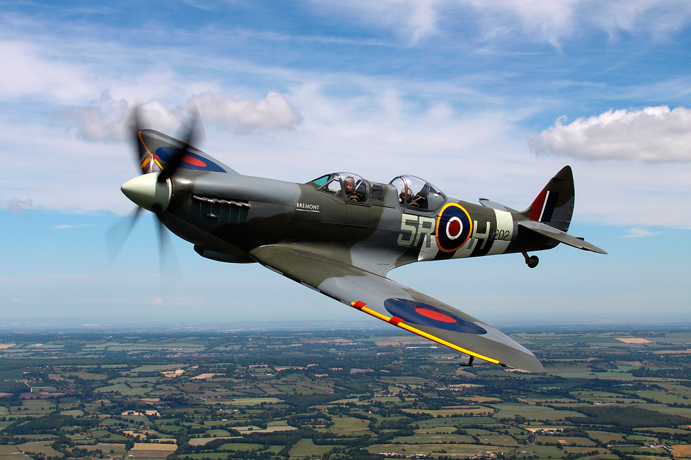

The
Supermarine Spitfire is a British single-seat fighter aircraft used by the Royal Air Force and other Allied countries before, during and after World War II.
Many variants of the Spitfire were built, using several wing configurations, and it was produced in greater numbers than any other British aircraft.
It was also the only British fighter produced continuously throughout the war. The Spitfire continues to be popular among enthusiasts; about 54 remain airworthy, and many more are static exhibits in aviation museums throughout the world.
The Spitfire was designed as a short-range, high-performance interceptor aircraft by R. J. Mitchell, chief designer at Supermarine Aviation Works, which operated as a subsidiary of Vickers-Armstrong from 1928. Mitchell pushed the Spitfire's distinctive elliptical wing designed by Beverley Shenstone[citation needed] to have the thinnest possible cross-section, helping give the aircraft a higher top speed than several contemporary fighters, including the Hawker Hurricane.
Mitchell continued to refine the design until his death in 1937, whereupon his colleague Joseph Smith took over as chief designer, overseeing the Spitfire's development through its multitude of variants.
During the Battle of Britain, from July to October 1940, the public perceived the Spitfire to be the main RAF fighter, though the more numerous Hurricane shouldered a greater proportion of the burden against Nazi Germany's air force, the Luftwaffe.
However, Spitfire units had a lower attrition rate and a higher victory-to-loss ratio than those flying Hurricanes because of the fighter's higher performance. During the Battle, Spitfires were generally tasked with engaging Luftwaffe fighters—mainly Messerschmitt Bf 109E series aircraft—which were a close match for them.

After the Battle of Britain, the Spitfire superseded the Hurricane to become the backbone of RAF Fighter Command, and saw action in the European, Mediterranean, Pacific, and South-East Asian theatres.
Much loved by its pilots, the Spitfire served in several roles, including interceptor, photo-reconnaissance, fighter-bomber and trainer, and it continued to serve in these roles until the 1950s.
The Seafire was a carrier-based adaptation of the Spitfire which served in the Fleet Air Arm from 1942 through to the mid-1950s.
Although the original airframe was designed to be powered by a Rolls-Royce Merlin engine producing 1,030 hp (768 kW), it was strong enough and adaptable enough to use increasingly powerful Merlins and, in later marks, Rolls-Royce Griffon engines producing up to 2,340 hp (1,745 kW). As a result, the Spitfire's performance and capabilities improved over the course of its service life.